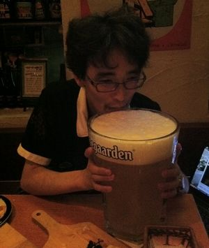

本名
太田顺也（太田おおた 順也じゅんや，Oota Jun'ya）
笔名、昵称
ZUN
创造游戏的能力（永夜抄结尾）
幼年时代就曾被称呼为ZUN（ずん）1。
似乎是因为街机游戏的用户名字被限制为只能输入三个字母[《40th COMIC MARKET CHRONICLE采访》的简介部分]，而再度使用该称呼。
自称、通称
博丽神主[最常见的自称]、幻创神主[《东方永夜抄》的ED部分]、神主[Fans们的常用称呼]、ZUN先生
ZUN曾为博丽神社事务所的即卖会起名为“博丽神社例大祭”，故而选择自称神主。[《东方我乐多丛志》相关采访第7回]
在东方求闻史纪的封底，ZUN使用了爱好者所赠送的“博丽神主”印章。而在MAGNET采访中，ZUN工作室的门上就贴着守矢神社的御朱印2。
能力
创造游戏程度的能力[游戏Staff表]
生日
1977年3月18日（昭和52年）
年龄
现年46岁（截止到2023年05月23日-日本时间）
2001年（将近25岁）时的ZUN曾提到自己“终于到了厄年”[神主介绍]，而2019年恰逢是42岁的厄年3。
职业
目前工作为全职进行东方Project相关的制作和事务等，包括游戏的开发、小说的创作、漫画脚本以及杂志内容的撰写和审阅等。
由于ZUN在多数时间都专注于东方Project本身的内容创作，而有关企业和授权的工作已委托其朋友协助进行（参见株式会社香霖堂）。
曾在游戏公司TAITO供职，在公司学习过一些关于制作游戏的方法，并在实习期间当过游戏厅的店员。
因工作压力增大而以游客身份久违地参加了CM11，但受到“那些看上去不怎么样的游戏也能卖得很好”的刺激而决定以音乐社团的身份参加次年的冬CM。因落选而选择在2002年以游戏社团的身份参展。

「ZUN」原本是因为街机游戏只能输入3个文字的限制而使用的名字。
自称博丽神主，曾在主页的自我介绍页面采用「神主紹介」的标题，还有《东方永夜抄》的staff里也有「“幻創神主”ZUN・创作游戏程度的能力」等字样。在各种文字中经常使用「博麗神主」作为落款。另外《东方求闻史纪》的封底等处也使用了爱好者赠送的「博麗神主」印章。
也被东方爱好者称为「神主」。
神主是日本神社中从事管理的人员职位，请不要以字面意思理解。
创作游戏时，ZUN也有从身边不同的事物或是民间习俗，包括其出身地长野县的民间传统来取材。在创作东方风神录的时候ZUN有亲自到神社取材。
在演讲会东方的黎明中ZUN自述从初中时学校开设的作曲课程上开始自己作曲，从小学就学会了演奏电子琴（父母买的）和小号（管乐的一种），他也提到他工作的公司（Taito，当时ZUN还尚未离开Taito）不欣赏他的东方作品，虽然理由未知。
几乎他去哪里都戴着低顶圆帽，经常穿绿色花格子宽领衫。